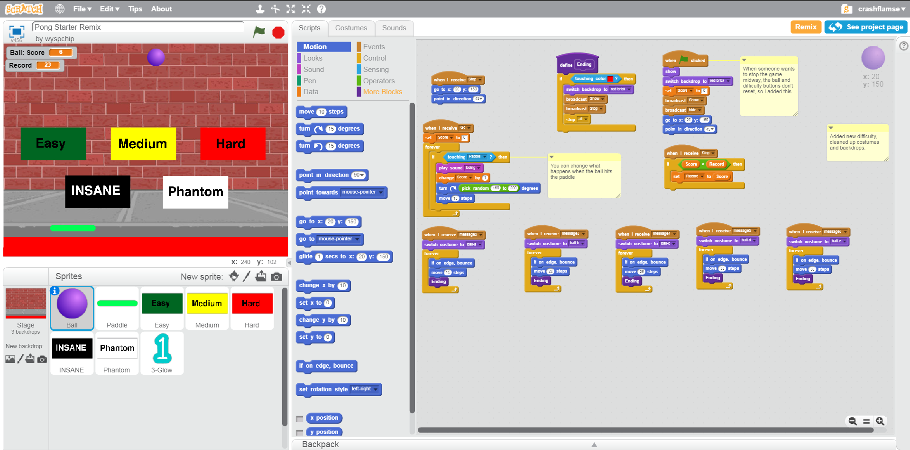
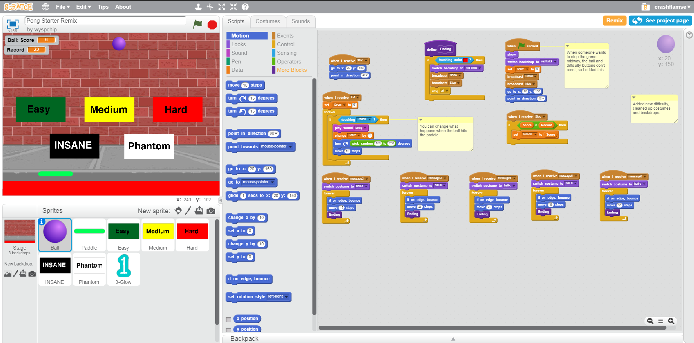
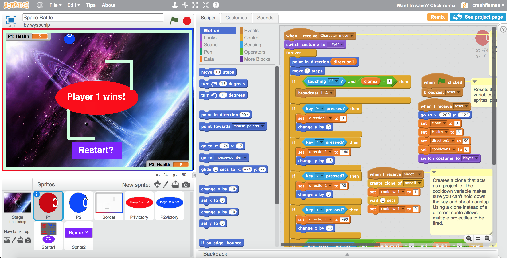
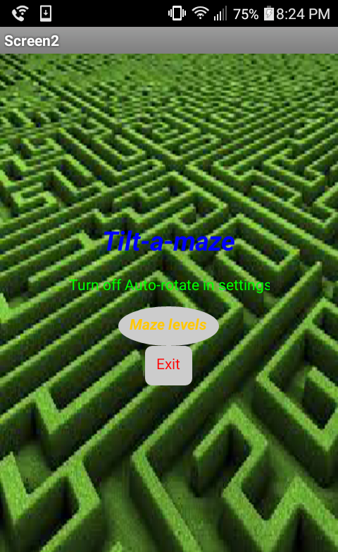

This is the scratch project which we remixed. We've just remixed a pong starter project. Adding in new difficulites and a score. Try to beat your record in this!
This is the scratch game we created for the project. It is a 2-player game where the objective is to lower the opponent's health.
This is a Mit Appinventor game made by me and my partner Jevon. It is a tiltmaze using orientation where the objective is reach the end with the ball.